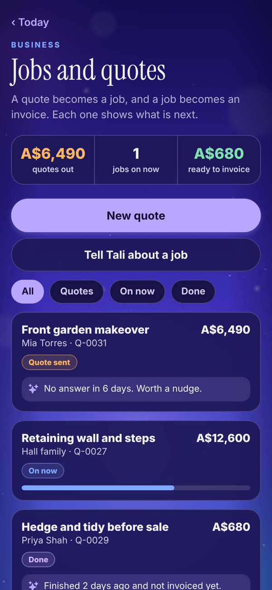
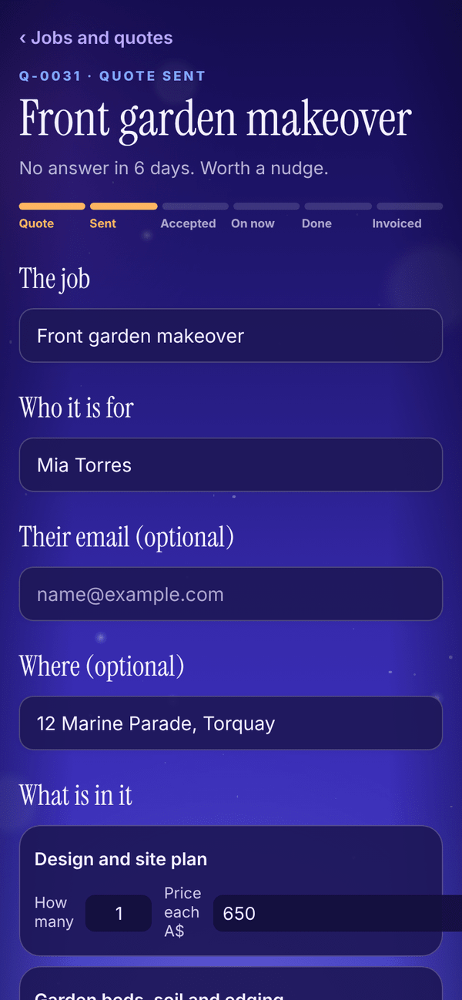
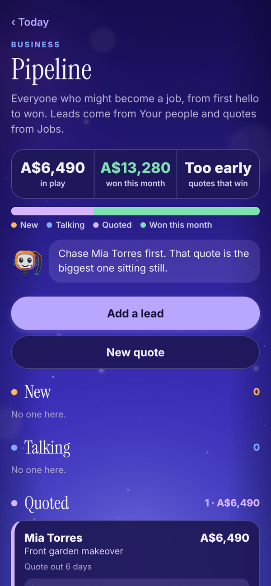
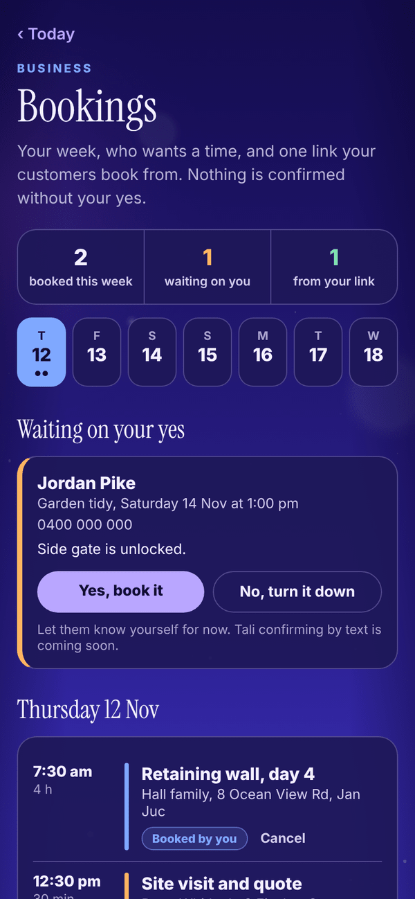
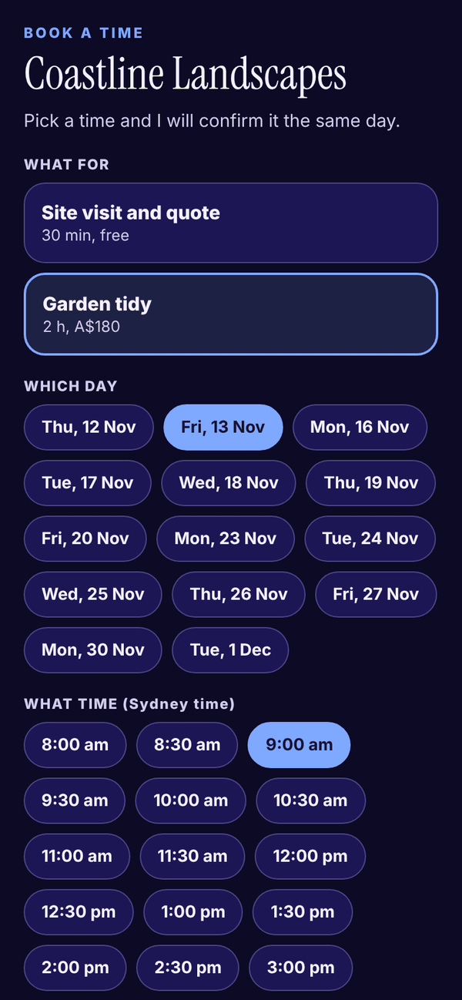
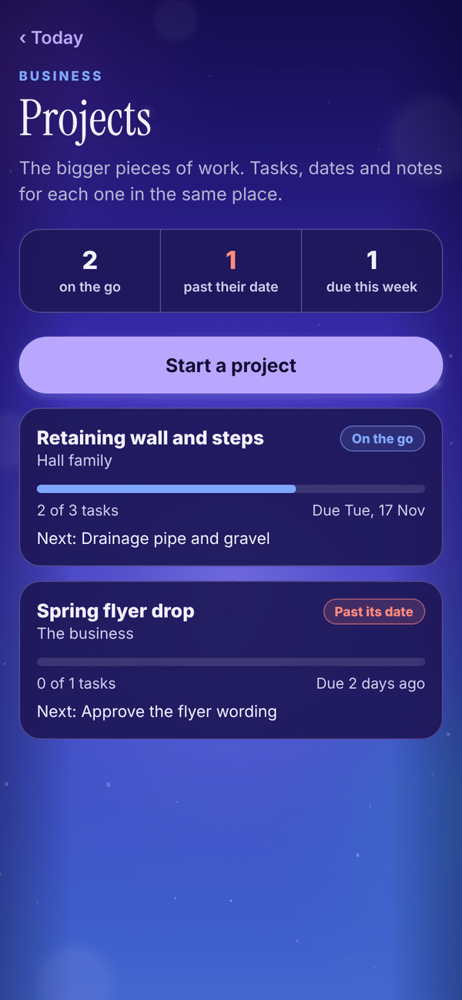

Tali HQ guide
Jobs, quotes, pipeline, bookings and projects
The tools that come with Tali HQ Business. Quote a job and turn it into an invoice, see who to chase next, take bookings from one link, keep bigger work on track, bring in your team and run more than one business.
Business
Tali HQ Business adds the tools a small business runs on. You reach them from the Tools card on Today on the Business side, and from Your world, Work. On other plans each tool shows what it does and a button to Plans.
Jobs and quotes#
A quote becomes a job, and a job becomes an invoice. Each card shows what is next.


- Tap New quote, or Tell Tali about a job and let her start it.
- Add what the job is, who it is for and the lines that make it up, each with how many and a price. Switch on Add GST to add 10% on top.
- Share the quote as a PDF. It matches your invoices.
- Move it along as it happens: sent, accepted, on now and done.
- When the job is done, one tap turns it into a draft invoice.
Pipeline#
Everyone who might become a job, from first hello to won. Leads come from Your people and quotes come from Jobs, stacked by stage with the value of each. A lead can carry what it could be worth, and Tali tells you who to chase first.

Bookings#
Your week, your services and one link your customers book from.


- Add your services, each with a length and a price.
- Share your booking link, which looks like talihq.com.au/book/your-name. Nobody needs to sign in to use it.
- A request from the link waits under Waiting on your yes. Tap Yes, book it or No, turn it down.
- The public page only shows your business name, your services and the times already taken.
Projects#
The bigger pieces of work. Each project has tasks, who is doing each one, a due date and notes, and shows whether it is on the go, paused or done.

Quote calculator#
A page where customers pick what they want and see a rough price. Their request lands in your Pipeline. Open it from the Tools card on Today.
- Under Ask Tali to set it up, type your prices in plain words, like "call out A$90, lawns A$60 each, hedges A$45 an hour", and tap Set it up for me. Or fill it in yourself.
- Pick Your link name. Your page is talihq.com.au/quote/your-name.
- Set a Heading, a line or two under it, and a Starting price if you have one.
- Under Things to pick, add each thing with its price. Tap Add an option for choices.
- Switch on Taking quote requests, tap Save, then Copy my link to share it.
Check every price Tali sets up before you save. Each request is a guide price, and nothing is promised until you say so.
Your team#
Bring your staff into Tali HQ. Give someone a job or a task and they see just that, and you choose what else each person can see. Open Your team from the Tools card on Today.
- Tap Invite a teammate.
- Add Their name, Their email and What they do (optional), like "Leading hand".
- Pick Their seat: a Standard seat (A$19.99 a month, 1,000 Tali credits) or a Premium seat (A$49.99 a month, 3,000 Tali credits).
- Under What they can see, switch on any of Customers, Quotes and prices, Invoices and money and Pipeline and bookings. Jobs and tasks you give them are always on.
- Tap Send the invite.
They get an email saying you added them. They sign up or sign in with that email address, and their work is waiting. It costs them nothing.
- The seat is added to your plan, and the rest of this month is charged straight away.
- Each teammate has their own login, their own Tali and their own credits, which reset on the 1st and don't come out of yours.
- Open someone to change their seat or what they see, see how much Tali they've used this month, or tap Give [their name] a job.
- Remove from the team (then Tap again to remove them) frees the seat from your next bill. Their own Tali HQ account stays theirs, on the Free plan.
- A team can have up to 50 people.
More than one business#
Run a second business from the same login. Each one keeps its own jobs, invoices, bookings, projects and receipts, and you switch between them at the top of the screen. Open Businesses from the Tools card on Today.
- On Which business?, tap Add a business.
- Add What is it called, what it does (optional) and its ABN (optional, for its invoices; leave it empty to use your main one).
- Pick Its colour, then tap Add with its name.
- An extra business is A$99.99 a month, added to your plan. The rest of this month is charged straight away.
- Pick a business on Which business? to work in it, or All businesses to see everything together, each item tagged with its business.
- Your customers stay one list with one set of notes. A customer shows in a business once you make them a job or an invoice there.
- Your team stays the same across your businesses, with the access you gave each person.
- Each business counts its own invoice numbers. Invoices sent by card through Stripe carry your main business details, so send invoices for another business as a PDF if its ABN is different.
- Quotes and invoices Tali makes for you in chat go into your main business for now.
- Remove this business moves its jobs, invoices and the rest into your main business. Nothing is deleted, and it comes off your next bill.